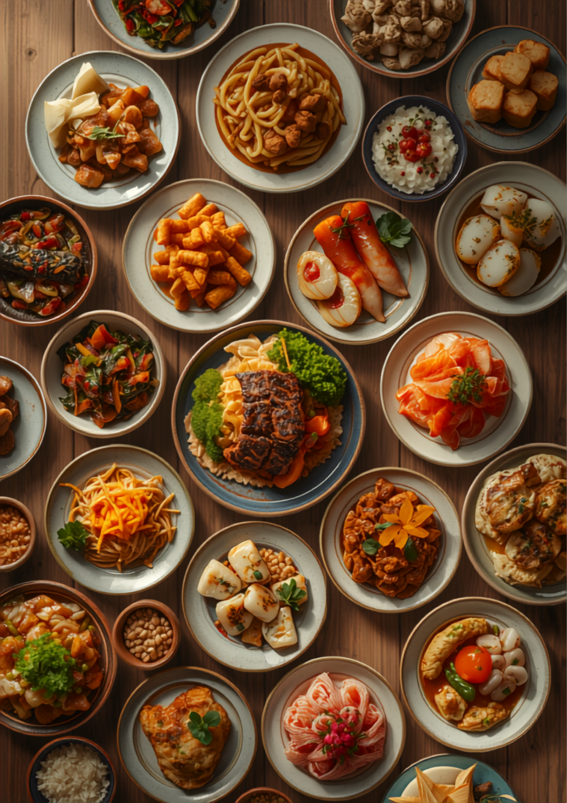
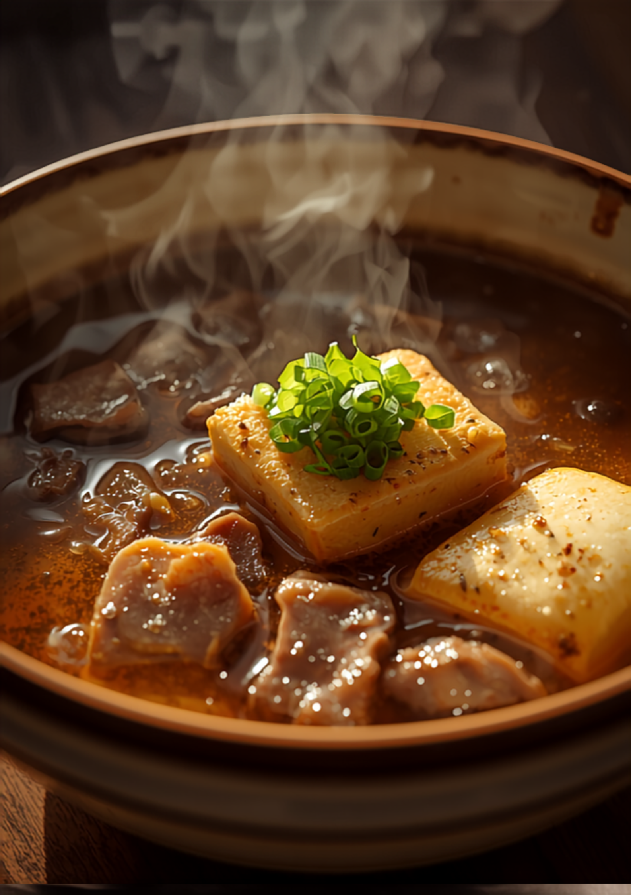

和・洋・中、ジャンルを問わない多彩な創作料理。豆皿メニューがあるから、一人でもいろんな味を楽しめる。
住宅街にひっそり佇む、ゆるくて確かな隠れ家。

Mamezara — Little Dishes
「皆の好きな料理がバラけるくらい、どれもハズレなし」。お通しから、じっくり煮込みまで。少しずつ、卓いっぱいに。

Slow-cooked
お酒やごはんが進む、絶妙なバランス。ゆっくりサシ飲みしたいときも、家族でご飯にも、どんな状況にも合います。
相談すれば、人数にあわせて豆皿の量も調整してもらえます。ワンオペで店を回す店主さんの、丁寧なひと皿。
Voices
お客様が、そのまま言葉にしてくれました。
何を食べても美味しくて、次回は新しいものに挑戦したい気持ちと、リピートしたい気持ちで葛藤があります。家族の好きな料理がバラけるくらい、どれもハズレなし。お通しから美味い。
和・洋・中ジャンルを問わず多彩な創作料理。豆皿メニューがあり一人でも種類を楽しめるのも魅力。お通しの芋カレーがピリ辛で美味すぎた。あつあげも表面ザクザク。
狭くない店内がほぼ満席なのに、店主さんが一人で回していて驚きました。お料理はどれも美味しく、会計はお手頃。また行きたいなと思うお店でした。
Access